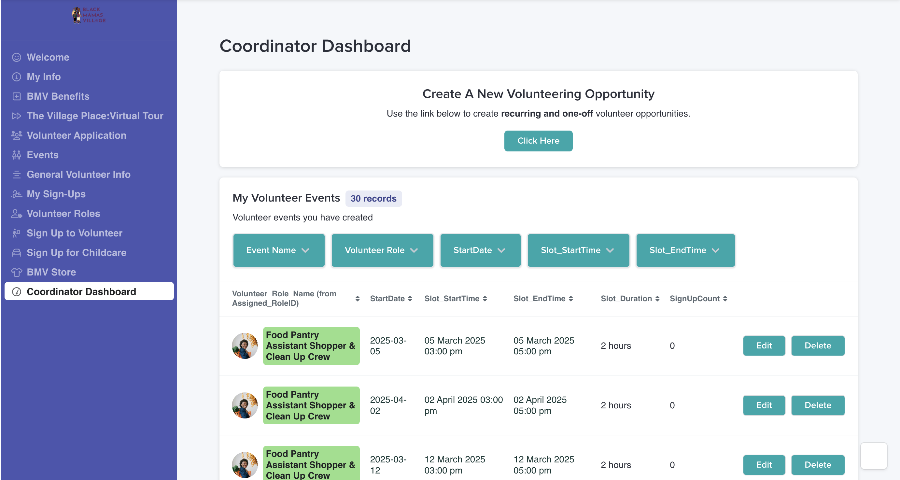

Nonprofit Organization: Black Mama’s Village
Reimagining Nonprofit Portal Workflows for Self-Service Volunteer Management
Strategist
Airtable
For Volunteers:
- Streamlined volunteer event management from fragmented multi-step process to intuitive self-service workflow
For Admins:
- Reduced administrative burden on staff through automated volunteer management capabilities
- Enhanced organizational efficiency with centralized volunteer data and communication tools
Black Mamas’s Village needed a smoother system to manage volunteers with their no-code CRM and reduce admin load.
Black Mamas’s Village (BMV) is a nonprofit in Austin, TX, using Airtable and Stacker as their CRM. But its unintuitive UI in the CRM forced staff to manually support volunteers at every turn.
As the sole designer, I partnered with the co-founder to tackle these gaps and turn the system into a self-serve portal that worked for everyone.

BMV’s CRM that uses a Stacker front-end UI and Airtable backend database.
Over 8 weeks, I led a collaborative discovery process with the co-founder.
Mapped out user and admin pain points in Airtable and Stacker
Audited workflows to identify duplication and inefficiencies
Aligned on a streamlined, user-first portal vision

A future state screen flow I created for the coordinator persona
I had to be creative — creating an intuitive user experience with Stacker’s limited capabilities was not the easiest.
Designed new user flows and wireframes in Figma to visualize and test potential improvements.
Created sandbox pages directly in Stacker to validate these ideas with the co-founder before launching live changes.
Switched to a third-party form (which integrates with Stacker) for event creation, to allow conditional display of questions that are relevant, improving both admin and volunteer UX.
Working within Stacker’s no-code limitations, I created a streamlined, self-serve volunteer portal with two key focuses.
Allowing volunteers and coordinators to self manage events & registration
Eliminating volunteer guesswork by reframing critical information
Priority #1: Allowing volunteers and coordinators to self manage events & registration
#1.1
Created a new Coordinator Dashboard page to allow coordinators to create, edit, cancel, and view all events they are coordinating

#1.2
<
Configuring pre-filled Cancel sign up emails, defaulting email addressee, title, and body text

Priority #2: Eliminating volunteer guesswork by reframing critical information on Volunteer Event Sign Up page
#2.1
Re-configured field names & values on Volunteers’ Event Sign Up page for conciseness and clarity

#2.2
Updated Volunteers’ Event Sign Up page to a table layout to display more opportunities without scrolling
BEFORE

AFTER

Empowering volunteers and coordinators to self-serve significantly reduced admin load and boosted engagement.
With the new changes in the portal...
Volunteers can now
Quickly see relevant events and sign up independently
Admins can now
Focus on growing program impact
Designing within no-code constraints taught me how to find creative workarounds to deliver real user impact.
This project was my first time using Stacker and Airtable, and it taught me the
power of designing within constraints.
Working within a no-code platform meant I had to get creative with solutions. This included integrating FillOut to bypass Stacker’s form limitations, configuring new fields on the Airtable database to create user-friendly displays of information.
These creative workarounds let me build a user-first experience that directly supported BMV’s mission and freed up staff to do more good.